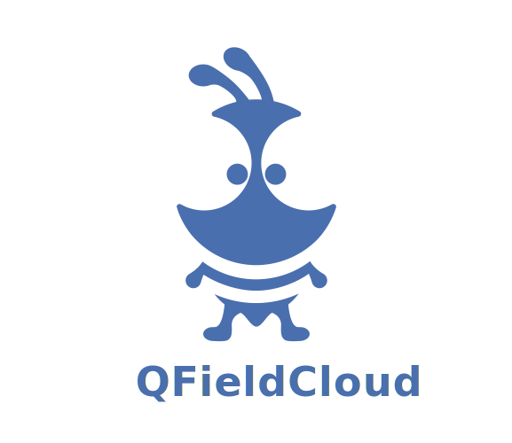

<style> .reveal .slides::after { content: ""; position: fixed; bottom: 10px; right: 10px; background-image: url('assets/logo-bg-cut-l.png'); background-size: 100px; background-repeat: no-repeat; opacity: 0.2; width: 100px; height: 100px; pointer-events: none; z-index: 1; } .reveal h1 { text-align: center !important; font-size: 75px !important; width: 100%; margin-top: -100px; -webkit-text-stroke: 3px var(--opengisch-dark) !important; } .reveal h2 { color: var(--opengisch-dark) !important; -webkit-text-stroke: 3px var(--opengisch-dark) !important; } .reveal h2+h2 { color: var(--opengisch-blue) !important; -webkit-text-stroke: 3px var(--opengisch-blue) !important; } </style> # STATE OF  --- ## What is ## QFieldCloud? <br> <br> <br> ## Your tool for ## seamless fieldwork! --- ## [app.qfield.cloud](https://app.qfield.cloud) <br> the OPENGIS.ch hosted solution QFieldCloud is hosted in Switzerland! <img src="assets/suisse.png" height="300px" style="display: block; margin: 0 auto;"> --- ## On-premises ## QFieldCloud QFieldCloud is hosted in your organization! <p style="font-size: 200px; text-align: center !important;"> 🌎🌍🌏 </p> --- ## 2024 ## in review --- ## 8000 ## unique active monthly users --- <!-- ## 14200 monthly jobs --> ## Every 3 minutes ## a new job is started <!-- --- ## 30 days ## of processing per month --> --- ## Several ## on-premises installations --- ## Notable ## new 2024 features - Better, faster, stronger. - Teams management via QFieldCloud API. - Finer file permissions for sensitive files. - [QFieldCloud SDK docs](https://opengisch.github.io/qfieldcloud-sdk-python/) - docs and examples. --- ## 2025 will be ## an exciting year! --- ## Single sign-on (SSO) support Support to login via Google landing soon. --- ## File storage improvements Great performance improvements for large projects. --- ## Shared files between projects Upload your basemaps once, synchronize it with all projects in your organization. --- ## And more, thanks to you, ## our users and supporters! --- ## Thank you! 